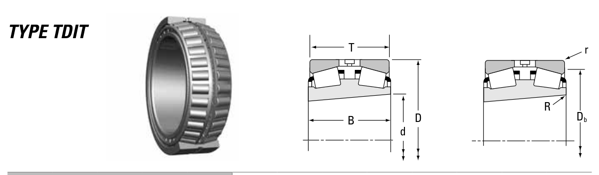

Original catalogue drawing - Timken TRB Catalog, page 644

Scanned from the manufacturer catalogue page listing this part number. All part numbers printed on that table share the same drawing.
Scale cross-section
Blue = inner / outer ring, yellow = rolling element. Drawn to scale from this part's own
dimensions for selection reference only - not a manufacturing or assembly drawing.
Dimension table (mm / inch)
Symbol
Dimension
mm
inch
d
Bore diameter
288.925
11.375
D
Outside diameter
406.4
16
B
Inner-ring / bearing width
144.462
5.6875
T
Overall assembly width
144.462
5.6875
r
Chamfer (min)
3.3
0.1299
Notes
Tapered roller bearings are cone / cup assemblies; cone and cup weights are listed separately and the total is their sum. Weights are given in kg. Load ratings are shown in both the original catalogue units and the converted value (1 N = 0.2248 lbf). Data is provided for selection reference only - confirm against the latest official catalogue before ordering.
Main dimensions
Bore d (mm)
288.925
Bore d (in)
11.3750
Outside dia. D (mm)
406.400
Outside dia. D (in)
16.0000
Width B (mm)
144.462
Width B (in)
5.6875
Overall width T (mm)
144.462
Overall width T (in)
5.6875
Load ratings & speeds
Basic dynamic load rating Cr (lbs)
466000
Basic dynamic load rating Cr (N)
2070000
Dynamic rating C1 (N, ISO)
2070000
Dynamic rating C1 (lbf, ISO)
466000
Radial rating C90 (N)
308000
Radial rating C90 (lbf)
69300
Thrust rating Ca90 (N)
179000
Thrust rating Ca90 (lbf)
40100
Factor e
0.34
Factor Y1
2.00
Factor Y2
2.97
Factor K
1.73
Geometry factor G1
2301.3
Geometry factor G2
287.6
Geometry factor Cg
0.1722
Weight
Weight (kg)
62.4
Mounting dimensions (fillets / shoulders)
Shaft fillet R max (mm)
3.3
Housing fillet r max (mm)
3.3
Housing shoulder Db (mm)
379.0
Bearing life (ISO 281 basic rating life)
C / P
Equivalent load P (N)
L10 (106 rev)
L10h at 500 rpm
4
517,500
102
3,386
6
345,000
392
13,083
8
258,750
1,024
34,133
10
207,000
2,154
71,814
15
138,000
8,323
277,449
Basic rating life per ISO 281: L10 = (C/P)10/3 with C = 2,070,000 N. Hours = L10 x 106 / (60n). Life-modification factors for lubrication, contamination and temperature (aISO) are not included.
Source & traceability
Brand
Timken
Source catalogue
Timken Tapered Roller Bearing Catalog (2016)
Catalogue page
p.644 (dimensions)
Series type
TDIT
ISO dynamic rating C1, Timken C90 / Ca90, static rating C0, geometry factors and assembly weight.
Send us the quantity you need and we will come back with price and
lead time, normally within 24 hours. Equivalent parts from other brands can be quoted at the same time.